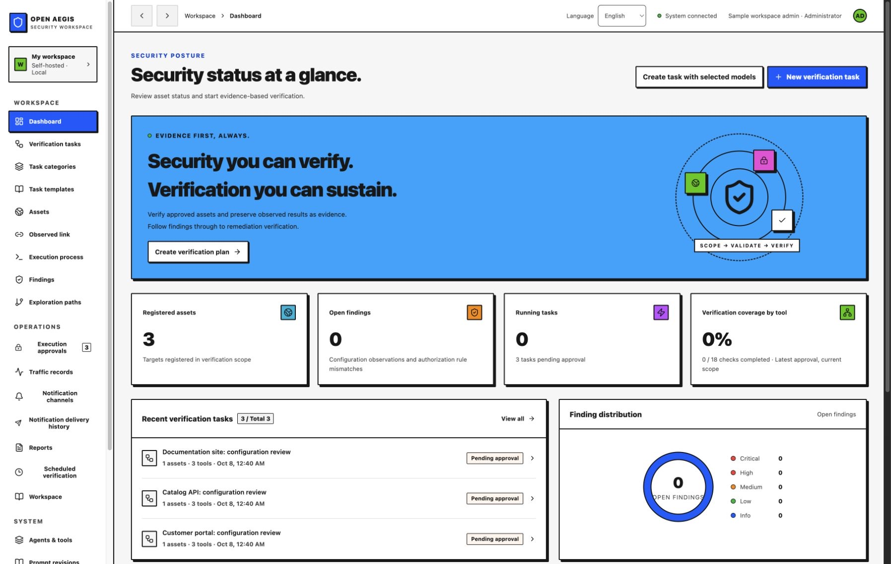

Start with what you own.
Register assets, owners, tags and explicit API access expectations. Each plan captures its scope and execution limits.
SELF-HOSTED · MIT · OPEN SOURCE
Know what was checked. Review what runs. Keep the proof when you fix it.
A security validation workspace that connects your authorized assets, reviewed plans, findings and independent retests.
Current: 1.0.0 · Self-hosted security validation
THE WORKFLOW

An actual console screenshot from an owned synthetic service. This page introduces the project; install the application to use your own workspace.
REVIEW → RUN → RETEST
Bring a question. Leave with the check, its result and the next decision connected.
Register assets, owners, tags and explicit API access expectations. Each plan captures its scope and execution limits.
Review a plan and approve execution separately. Goal decomposition and result-based follow-ups prepare proposals for a fresh decision.
Trace coverage, findings, traffic metadata, worker progress and audit records. Export Markdown, CSV and JSON evidence.
Record the remediation and run an independently approved retest. Preserve the original evidence and the new result.
ONE SHARED WORKSPACE
HTTP headers, HTTPS/HSTS, certificate expiry, cookie flags, CORS, scoped links and operator-defined GET API authorization expectations.
Rule-based planning, optional AI order and goal drafts, declared worker dependencies, shared todos and reviewed follow-up plans.
Versioned templates, task categories, archives, schedules, notes and fixed webhook notifications with delivery history.
OpenAI/direct Claude integrations, fixed-recipient model profiles, planner/conversation choices at task creation, catalog lookup, connection checks and request recovery.
Review ScopeSentry imports before applying assets. Read existing records through stdio MCP and review scoped remote GET execution separately.
SQLite or native PostgreSQL, backup/restore commands, audit checkpoints and administrator/operator/viewer roles.
RUN IT ON YOUR TERMS
Install Python 3.11+ and Node.js 22 with npm. Then run these commands from your terminal.
Prefer a prebuilt console? Follow the signed release installation guide ↗. Node.js is not needed to run that bundle.
Open http://127.0.0.1:8787 and create an administrator
password of at least 12 characters. The source console starts in English; Korean is also available.
The signed v1.0.0 bundle retains its original Korean console.
git clone https://github.com/SoonGwan/open-aegis.git
cd open-aegis
./start.shThe start script installs locked runtime dependencies and builds the console.
BUILT IN THE OPEN
Open Aegis is independently written, informed by ARTEX's public feature structure. It does not copy or fork ARTEX code.
The project provides documented, bounded validation. Complete ARTEX parity, an independent security audit, every vulnerability class and production service guarantees are not claimed.
BEFORE YOU START
The full implementation is MIT open source. Install and modify it yourself. Optional AI-provider usage and your own hosting costs are separate.
This is the project introduction. Install the application in your own environment to manage your assets and records.
Review HTTP/TLS, cookie and CORS settings, and operator-defined API access expectations on assets you own or are authorized to test. Review the scope and plan, then approve execution separately. See the implemented scope ↗